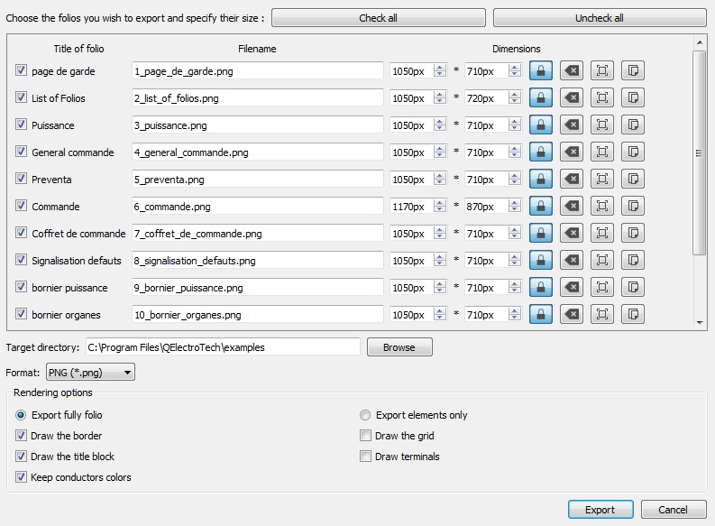

Export schema¶
QElectroTech allows exporting the different folios to many type of formats: PNG, JPEG, Bitmap, SVG and DWX.
Select File > Export menu item to display export PopUP window.

Figure: QElectroTech File menu
Note
QElectroTech allows using keyboard shortcut to increase the working efficiency.
- Press
Ctrl + Shift + Xto display export PopUP window.For more information about QElectroTech keyboard shortcut, please refers to Menu bar section.
Choose the folios you wish to export and specify their size.
Figure: QElectroTech export PopUP window
Choose target directory and format.
Choose rendering options.

Figure: QElectroTech exporting formats combo box
Press Export button to create the files.
QElectroTech creates one file for each folio choosed at the target directory defined.
See also
QElectroTech allows predefining export settings for reducing the working configuration effort each time that a project have to be exported. Please refers to Export settings section for more information.